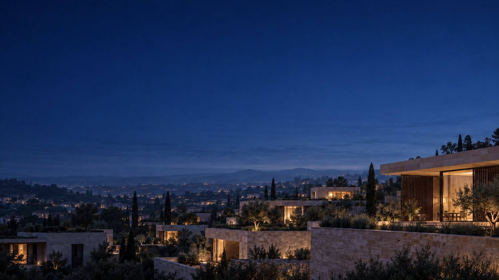

Комплексная реновация под ключ
Ведём объект от анализа и инженерной логики до дизайна, стройки и сдачи. Одна точка входа и полная ответственность за результат
Тестовое задание Diana Shvedskaia для adelt.io, не официальный сайт